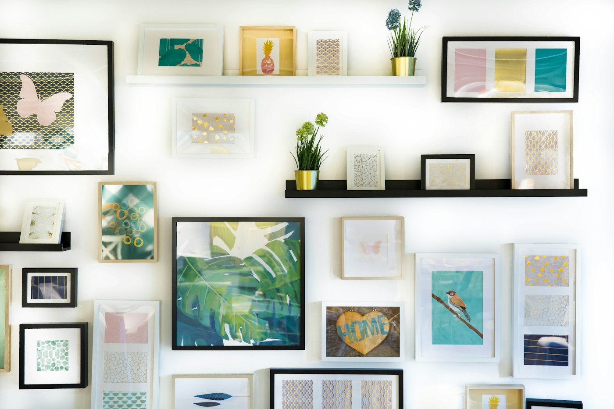
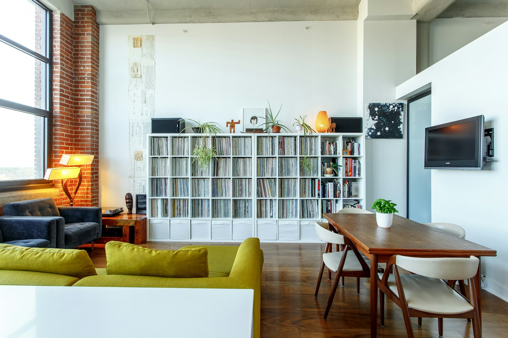

A bedroom makeover does not need a full renovation, a designer, or a shopping list as long as your arm. The most effective budget bedroom makeover ideas are usually small, well-chosen changes: a calmer wall, softer bedding, warmer light, and surfaces that are no longer buried under clutter. Done in the right order, a handful of these changes can make the same room feel noticeably fresher, cosier, and more restful.
This guide groups beginner-friendly ideas by the part of the room they change — walls, bedding and textiles, lighting, storage, and small furniture and layout. You do not need to do all of them. Pick two or three that solve the problems you notice most, work through them over a weekend or two, and live with the result before deciding what, if anything, to do next. Almost every idea here uses things you may already own, or low-cost basics that are often cheaper than buying new furniture.
Walls: The Fastest Visual Change
Walls take up most of what you see when you walk into a bedroom, so even a modest change here carries a lot of weight. You also do not have to treat every wall — one well-chosen wall, usually the one behind the bed, is enough to shift the mood of the whole room.
Refresh one wall first
If painting is allowed in your home, painting a single accent wall is a classic starting point because it needs less paint, less time, and less courage than repainting the whole room. Choose a colour that already appears in your bedding or curtains so the wall feels connected rather than random. Soft, muted tones tend to suit bedrooms because they read as calm in both daylight and lamplight. Prepare properly: move furniture away from the wall, protect the floor, clean the surface, and use painter’s tape along edges for a tidy line. If you rent or simply do not want to commit, removable wallpaper, a large piece of fabric hung neatly, or even a row of framed prints can give a similar focal effect without a permanent change — explore our Renter-Friendly Decor ideas for no-damage options.
Hang art or a small gallery above the bed
Bare walls often make a room feel unfinished rather than minimal. A single large print, a pair of matching frames, or a small gallery of three to five pieces above the headboard gives the eye somewhere to land. You can frame fabric offcuts, calendar pages, your own photos, or simple line drawings — the frame does much of the work of making inexpensive art look deliberate. Plan the arrangement on the floor or with paper templates taped to the wall first, keep spacing roughly even, and hang the centre of the arrangement around eye level when standing. Our DIY Wall Decor category covers gallery walls and handmade art in more depth.

Use a mirror to borrow light
A mirror placed opposite or beside a window reflects daylight into darker corners and makes a small bedroom feel less boxed in. Leaning a mirror on a dresser is a no-drill option that also fills awkward vertical space. Keep the mirror angled toward something pleasant — a window, a plant, a tidy shelf — because it will double whatever it faces, including clutter.
Bedding and Textiles: The Cosy Layer
The bed is the largest piece of furniture in the room, so what covers it sets the tone for everything else. Textiles are also the easiest things to change, wash, and change back, which makes them ideal for beginners.
Start with the duvet cover or bedspread
Swapping the main bed covering is often the single biggest visual change for the least effort. A plain or lightly patterned cover in a colour from your chosen palette instantly looks calmer than a mix of unrelated prints. If a new set is not an option right now, try the set you own inside out if the reverse side is plainer, or fold a contrasting throw or blanket across the foot of the bed to break up a pattern you have grown tired of. Wash and fully dry bedding before the makeover day itself — fresh bedding makes even an unchanged room feel better.
Layer a throw and two or three cushions
Layering is what makes a bed look inviting rather than flat. Drape a throw diagonally or fold it along the foot of the bed, then add a small number of cushions — two sleeping pillows, plus one or two decorative cushions, is plenty for most beds. More than that tends to become a nightly chore rather than a pleasure. Reuse cushion covers in your palette colours, or make simple envelope covers from fabric remnants if you enjoy sewing. Mixing one texture, such as a knit or woven throw, against smooth bedding adds interest without needing more colour.
Soften the windows and floor
Curtains that reach the sill or floor, hung a little wider than the window frame, make windows look larger and the room more finished. If replacing curtains is not possible, washing, ironing, and rehanging the ones you have — with the rod straight and hooks evenly spaced — still lifts the room. A washable rug beside the bed, even a small one, softens hard floors, adds colour at ground level, and makes getting up on a cold morning more pleasant. Choose sizes that sit fully underfoot where you step out of bed.

Lighting: Warm, Low, and Layered
Many bedrooms rely on a single bright ceiling light, which can make even a tidy room feel stark in the evening. Layered, warmer lighting is one of the cheapest-feeling upgrades because it changes how every other colour in the room looks.
Add a bedside lamp you actually like using
A lamp at each side of the bed, or at least on the side where you read, creates a pool of warm light at a comfortable height and means the main light can go off earlier in the evening. Second-hand lamps with a new shade, or a plain lamp dressed up with a ribbon or fabric shade cover, are often cheaper than buying new. Use a warm-toned bulb rather than a harsh daylight one, check the bulb is suitable for the fitting, and keep cords tucked safely away from walkways.
Use small lights for atmosphere
A short string of warm fairy lights along a headboard or shelf, a small lamp on a dresser, or a candle-style LED light can make the room feel settled at night without much cost. Battery-operated options avoid the need for spare sockets. If you use real candles, keep them on a stable heatproof surface, away from bedding and curtains, and never leave them burning while you sleep — LED alternatives give a similar glow without the risk.
Storage: Clear Surfaces, Calmer Room
A surprising amount of “my bedroom looks tired” is simply too much stuff with nowhere to go. Storage changes rarely photograph dramatically, but they are what keep a makeover looking good after the first week.
Clear the surfaces first
Start by completely clearing the nightstands, dresser top, and any chair that has become a wardrobe. Put back only what you use daily — a lamp, a book, a glass of water, a small tray for jewellery or glasses. Everything else needs a drawer, a basket, or a new home outside the bedroom. This step costs nothing and often reveals that the room needs less new decor than you thought. A small tray or shallow box on the dresser keeps the few remaining items looking organised instead of scattered.
Use baskets, boxes, and the space under the bed
Matching baskets or simple lidded boxes hide visual clutter while keeping things reachable. Use them for chargers and cables, scarves, spare toiletries, or the paperwork that migrates to the bedroom. The space under the bed suits flat storage boxes for out-of-season clothes or spare bedding — measure the clearance under the frame before buying containers so they actually slide in. Label boxes on the side you see when they are stored; it saves emptying three boxes to find one item later.
Give everyday clothes a simple system
A few hooks behind the door, a small rail, or one designated chair with a limit — for example, tomorrow’s outfit only — stops clothes spreading across the room. Drawer dividers or rolled clothing make drawers easier to search, which makes putting things away quicker. The best system is the simplest one you will actually follow on a tired evening, not the most elaborate one.

Small Furniture and Layout: Work With What You Have
Before buying anything, look at what is already in the room. Rearranging and refreshing existing furniture is the heart of a budget makeover, and it is reversible if you change your mind.
Rearrange the layout
Moving the bed so it is not the first thing you bump into from the door, centring it on a wall, or simply pulling furniture a few centimetres away from the walls can make a room feel larger and more deliberate. Sketch two or three layouts on paper first, check you can still open drawers, doors, and wardrobes fully, and keep a clear path from the door to the bed. Try a new layout for a few nights before deciding — rooms feel different to live in than they look in the first hour.
Refresh one small piece of furniture
A nightstand or small dresser is a manageable first furniture project. Clean it thoroughly, tighten wobbly handles, and consider paint or a wood finish suitable for the material, following the product instructions and working in a ventilated space. Swapping handles or knobs for a matching set is a smaller job that still makes old furniture look cared for. Test any paint or finish on a hidden area first, and let pieces dry fully before bringing bedding near them.
Create one small useful corner
If space allows, define a tiny corner with a job: a reading chair with the lamp you added, a small desk area, or a dressing spot with the mirror. A corner with a purpose makes a bedroom feel planned rather than filled, and it gives you a reason to keep that area tidy. Use a rug, a cushion, or a small side table you already own to mark the zone instead of buying a full new set-up.
Where to Start: A Simple Order That Works
If the full list feels like a lot, follow this order. Each step builds on the one before it, and you can stop after any step with the room already improved.
- Clear and clean. Declutter surfaces, wash bedding and curtains, and clean the room properly. This is free and makes every later change more visible.
- Choose your palette. Pick two or three colours based on something you already own and like — a duvet cover, a rug, a favourite print — and let them guide the rest.
- Rearrange the layout. Move furniture while the room is clear. It is much harder to do once new items arrive.
- Fix the bed. Make the bed the focal point with your chosen bedding, a throw, and a few cushions.
- Treat one wall. Paint, hang art, or add the mirror — just one wall, done well.
- Add warm lighting. Place the bedside lamp and any small lights, then judge the room in the evening, not just in daylight.
- Organise storage last. Give everything left in the room a home in a basket, box, or drawer so the makeover lasts.
Helpful Tips for Beginners
- Set a realistic limit before you shop. Decide what you can comfortably spend in total, list what you want in priority order, and stop when the list — not the display shelf — says you are done.
- Shop your home first. Throws, cushions, frames, baskets, and lamps often migrate between rooms. Borrowing from the living room costs nothing and keeps the palette consistent.
- Buy slowly. Live with each change for a few days. A room that grows in stages usually ends up more personal — and less wasteful — than one bought in a single trip.
- Measure twice. Rugs, curtains, storage boxes, and furniture all need the room’s measurements, plus door and drawer clearance. Keep the numbers in your phone when you shop.
- Keep one calm zone. Not every surface needs decor. Leaving the nightstand or one wall mostly clear makes the decorated areas stand out more.
- Take a before photo for yourself. It is easy to forget how far the room has come, and a photo helps you see which change actually made the difference.
Frequently Asked Questions
How can I make over my bedroom with very little money?
Start with the free steps: declutter, clean, rearrange the furniture, and wash all the textiles. Then borrow decor from other rooms, and spend only on the one or two gaps that remain — often bedding or a lamp. A small, planned list almost always looks better than several impulse buys.
What should I change first in a budget bedroom makeover?
Change the bed first, because it dominates the room. Fresh bedding in a calm colour, a folded throw, and a couple of cushions give the biggest visible return for the least effort. After that, one wall and warmer lighting usually matter more than new furniture.
How do I make a small bedroom look bigger?
Keep the palette light and limited, hang a mirror where it reflects daylight, choose curtains that sit high and wide, and protect floor space by using under-bed and vertical storage. Clear surfaces and a layout with a clear walking path also make a small room feel noticeably more open.
I rent my home. Which of these ideas are renter-friendly?
Most of them. Textiles, lighting, rearranged furniture, leaning mirrors, baskets, and removable wall options change nothing permanently. Check your rental agreement before painting or fixing anything to walls, and prefer removable strips, hooks, and leaning pieces where fixings are not allowed.
How do I choose a colour palette for my bedroom?
Start from one item you already own and love — bedding, a rug, or a print — and pull two or three colours from it. Use the calmest colour for the largest areas, such as walls and bedding, and the strongest colour only in small accents like cushions or a throw, so the room stays restful.
Conclusion
A good budget bedroom makeover is rarely about one dramatic purchase. It is the combination of a clear room, a calmer bed, one treated wall, warmer light, and storage that keeps it all in place. Work through the ideas in this guide in the order that suits your room, spend only where a change will be noticed every day, and give yourself time to enjoy each step. When you are ready for more, explore the full Bedroom Makeover category for the other topics in this series, including cozy bedroom ideas, bedroom wall decor, and DIY bedroom storage.